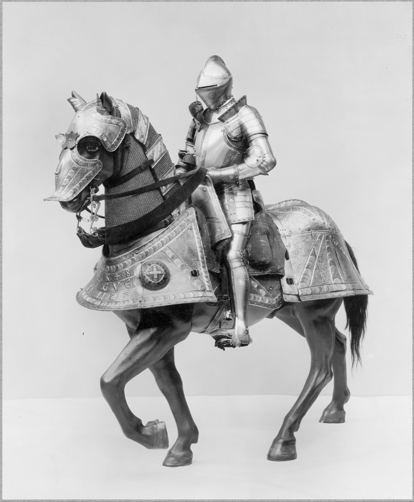
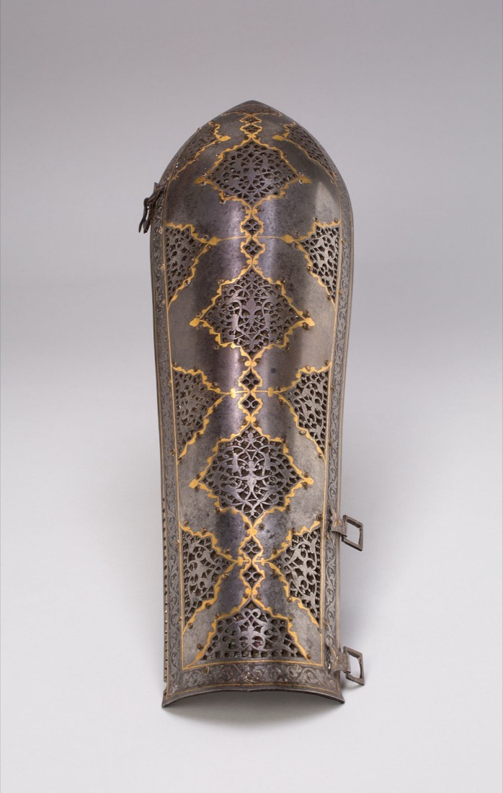

Werk dat steeds hetzelfde gaat, kan een systeem doen: mail sorteren, stukken nalopen, facturen overtikken. Wij bouwen het, op maat en getest.
Voor wie. Bedrijven met 2 tot 50 mensen die voelen dat er tijd weglekt, maar geen eigen IT-afdeling hebben om het op te lossen. Van advocatenkantoor tot installateur. Werk je met vertrouwelijke gegevens, dan is dat voor ons geen bezwaar maar het uitgangspunt.
Wat we bouwen. Agents en automatiseringen die één taak overnemen: mail indelen, dossiers controleren, facturen verwerken, afspraken plannen, antwoorden op klantvragen voorbereiden. Waar het ertoe doet, tekent een mens af.
Waarom nu. 13,8% van de Nederlandse microbedrijven gebruikt al AI, in de zakelijke dienstverlening 27,1%. Wie het overwoog en niet deed, noemt vooral gebrek aan ervaring (71,6%) en privacy (48,8%). Kosten noemt maar 20,3%. Bron: CBS.
Hoe je begint. Doe de scan hieronder. Tien vragen, vijf minuten, direct een uitslag en een rapport. Je antwoorden blijven in je browser tot jij ze zelf verstuurt.

Een harnas wordt samengesteld, niet uitgevonden.
De smid maakte het passend voor één lichaam. Wij koppelen bestaande, beproefde onderdelen tot iets dat past bij één bedrijf.
Eerst de scan of een gesprek.
Tien vragen online, of 45 minuten aan tafel. We vragen naar je week, niet naar je wensenlijst.
Binnen 48 uur een kansenkaart.
Eén pagina met drie taken die een systeem kan overnemen, en wat elk oplevert in je eigen uren.
Je kiest er één, voor één prijs.
Een vast bedrag voor het hele project, met een duidelijk eindpunt. Geen uurtje-factuurtje.
Getest op je eigen historie.
We laten de agent drie maanden van je eigen werk overdoen. Minder dan 95% juist? Dan vervalt de laatste termijn. Daarna houden we hem scherp, als je dat wilt.
Je gegevens blijven waar ze zijn.

Privacy by design betekent bij ons: we bouwen alleen in wat je al hebt, en de regels hieronder zijn het bestek, niet de bijsluiter.
Wat wij toezeggen
- OpslagNiets wordt buiten je eigen systemen bewaard
- SystemenWe bouwen in je bestaande zakelijke accounts
- AI-dienstenAlleen zakelijke diensten die niet trainen op je data
- ControleEen mens tekent af voordat iets naar een klant gaat
- VertrekAlles staat in jouw omgeving; je kunt altijd stoppen
Wat de wet vraagt, voor iedereen
- AVG art. 28Jij bent verantwoordelijk, wij zijn verwerker, vastgelegd in een verwerkersovereenkomstBron →
- AVG art. 32Beveiliging die past bij het risicoBron →
- AI-verordening art. 4Zorg dat je mensen weten hoe ze met AI werkenBron →
- AI-verordening art. 50Laat weten wanneer iemand met AI communiceertBron →
Wat de advocatuur daar bovenop vraagt
- NOvA, dec. 2025Geen gratis tools, weet waar je data staat, neem uitvoer nooit ongecontroleerd overBron →
- Gedragsregel 3Passende maatregelen bij de keuze voor dataverwerking en opslagBron →
- Gedragsregel 4Opnames van gesprekken vooraf melden, ook geautomatiseerdeBron →
Een samenvatting om het gesprek te beginnen, geen juridisch advies. Lees altijd de bron.
De gratis AI-scan
Tien vragen. Je score wordt geslagen zoals een harnas werd beproefd: met een schot, en de deuk bleef zitten als bewijs.
Kansscore
Zo rekenen we
Elk antwoord krijgt 0 tot 100 punten. De score is het gewogen gemiddelde: uren per week 35%, voorspelbaarheid 25%, hoe vaak het terugkomt 20%, je systemen 10%, AI-gebruik nu 5% en tempo 5%. Sector, omvang en gevoeligheid tellen niet mee in de score; ze bepalen het advies. Bij 10 of meer mensen of 15 of meer uur per week, en een score van 50 of hoger, bieden we een gesprek aan.
Je rapport
Drie stappen die je zelf kunt zetten
Omdat je met gevoelige gegevens werkt
uur per week, indicatie
Gebaseerd op je eigen antwoorden en het deel van het werk dat zich laat automatiseren. Geen belofte, wel een richting.
Vragen
Wat kost het?
Eén vast bedrag per project, dat je weet voordat we beginnen. We rekenen terug vanuit wat de taak je nu kost, niet vanuit onze uren. De scan en de kansenkaart zijn gratis.
Gaan mijn gegevens naar ChatGPT?
Niet naar een gratis of persoonlijk account, en nooit naar een dienst die op je data traint. We werken in je bestaande zakelijke systemen. Is er een AI-dienst nodig, dan kies je die samen met ons en staat hij in de verwerkersovereenkomst.
Moeten we nieuwe software kopen?
Meestal niet. We bouwen in Microsoft 365, Google Workspace of je branchepakket. Komt er toch iets bij, dan hoor je dat vooraf, met de kosten erbij.
Wat als de agent een fout maakt?
Daarom testen we op drie maanden van je eigen werk voordat hij live gaat, en tekent een mens af waar het ertoe doet. Na oplevering kijken we 30 dagen mee.
Is dit alleen voor advocaten?
Nee. In de advocatuur weegt vertrouwelijkheid het zwaarst, en wat daar volstaat, volstaat bijna overal. We werken voor elk bedrijf met terugkerend handwerk.
Wie bouwt het?
Mensen met jarenlange ervaring in het bouwen van agents en automatiseringen. We gebruiken bestaande, beproefde onderdelen en je praat met wie het bouwt.
Wat gebeurt er met mijn scan?
Niets, tenzij jij op versturen drukt. De scan rekent in je browser. Deze site gebruikt geen cookies en geen trackers.